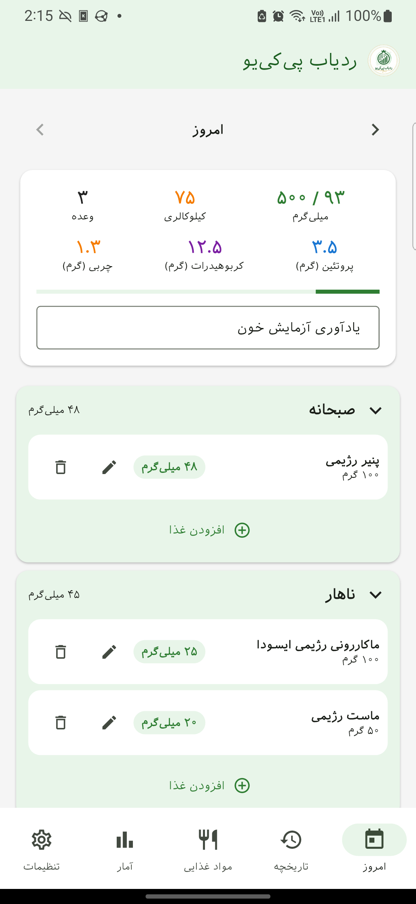
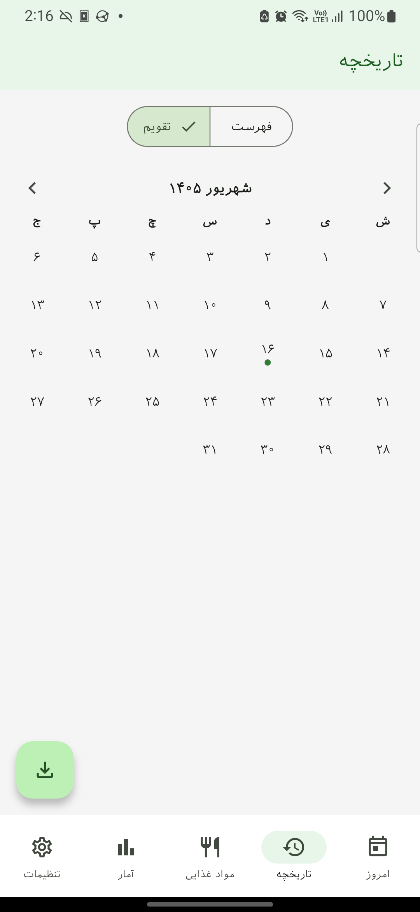
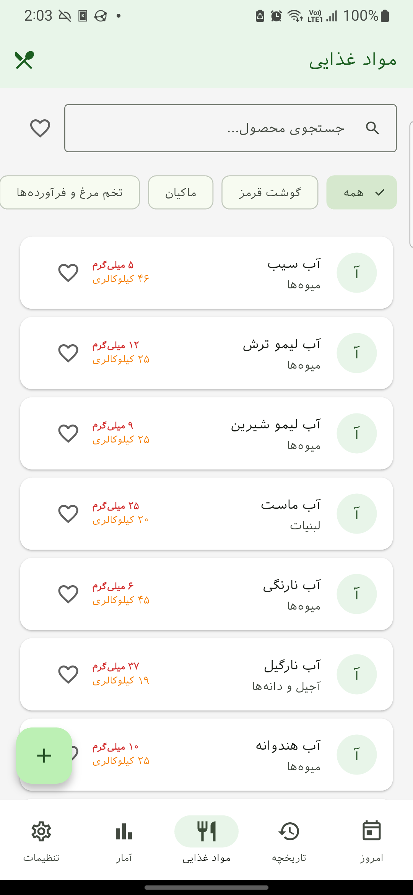
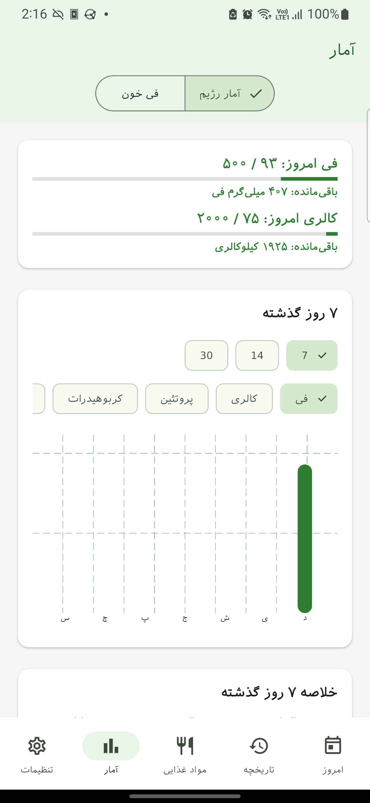
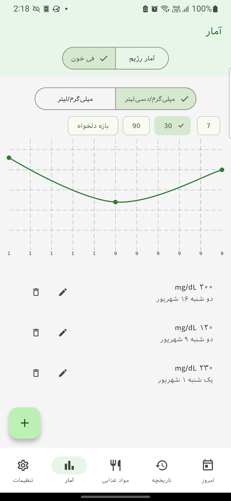
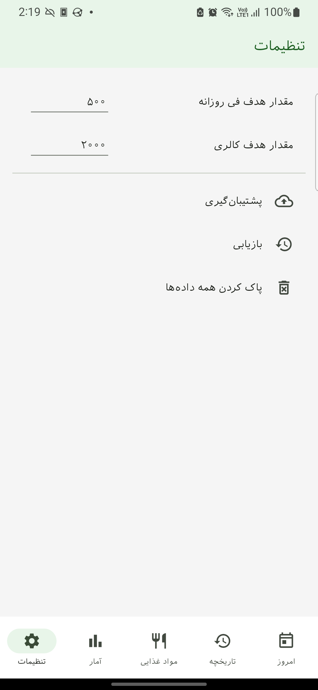

۱. شروع — صفحه امروز
زبانه امروز صفحه اصلی است. خلاصه روز جاری و هر بخش وعده غذایی (صبحانه، ناهار، شام، میانوعده) را نشان میدهد.
- فی، کالری و تعداد وعده روزانه خود را در یک نگاه ببینید.
- نوار پیشرفت نشان میدهد چقدر به هدف روزانه فی نزدیک هستید.
- در پایین کارت خلاصه، یادداشت روز را در کادر متن بنویسید.
- از دکمه افزودن غذا در هر بخش وعده غذایی برای افزودن یک غذا استفاده کنید.
- برای رفتن به روزهای قبل یا بعد، از فلشهای دو طرف تاریخ استفاده کنید.

۲. تاریخچه
زبانه تاریخچه به شما امکان میدهد روزهای گذشته را در نمای فهرست یا تقویم مرور کنید و دادهها را خروجی بگیرید.
- بین نمای فهرست و تقویم جابهجا شوید.
- برای باز کردن نمای جزئیات، روی هر کارت روز ضربه بزنید.
- با گزینه خروجی CSV، یک بازه زمانی را صادر کنید.

۳. مواد غذایی
زبانه مواد غذایی فهرست غذاهای شماست. میتوانید جستوجو کنید، بر اساس دستهبندی فیلتر کنید و غذاهای مورد علاقه را نشان کنید.
- از نوار جستجو برای پیدا کردن یک غذا بر اساس نام استفاده کنید.
- با برچسبهای بالای صفحه بر اساس دستهبندی فیلتر کنید.
- برای تغییر وضعیت علاقهمندی، روی نماد قلب ضربه بزنید.
- با دکمه افزودن غذا یک غذای جدید با مقادیر فی، پروتئین و کالری مخصوص خود اضافه کنید.
- نماد منو، مجموعه غذا را برای ترکیبهای قابل استفاده مجدد باز میکند.
- در انتخابگر غذا، با فعال کردن گزینه فقط موارد محبوب (نماد قلب)، دسترسی به غذاهای مورد علاقه سریعتر میشود.
- مجموعههای غذا که ایجاد میکنید، در انتخابگر غذا در دسترس هستند و افزودن وعدههای تکراری را آسانتر میکنند.

۴. آمار
زبانه آمار نمودارها و روندهای فی، کالری، پروتئین، کربوهیدرات و چربی را در یک بازه انتخابی نشان میدهد.
- یک ماده مغذی (فی، کالری، پروتئین، کربوهیدرات، چربی) را برای نمودار انتخاب کنید.
- یک بازه را انتخاب کنید: ۷، ۱۴، ۳۰ روز گذشته یا یک بازه دلخواه.
- پیشرفت امروز نسبت به هدف را در بالا مشاهده کنید.
- برای ثبت سطح فی خون، گزینه فی خون را انتخاب کنید.

۵. ثبت فی خون
در زبانه آمار، با انتخاب گزینه فی خون میتوانید سطح فنیلآلانین خون خود را ثبت کنید.
- تاریخ و مقدار فی خون را وارد کنید.
- میتوانید یادداشت اضافی (مثلاً شرایط آزمایش) ثبت کنید.
- پس از ذخیره، این مقادیر در فهرست فیهای خون ثبتشده نمایش داده میشوند.

۶. تنظیمات
زبانه تنظیمات به شما امکان مدیریت اهداف، یادآوریها و پشتیبانگیری را میدهد.
- مقدار هدف فی روزانه و مقدار هدف کالری خود را تنظیم کنید.
- برای داروها یا آزمایشهای خون، یادآوری ایجاد و مدیریت کنید.
- از دادههای خود در یک فایل JSON پشتیبان بگیرید یا از یک پشتیبان بازیابی کنید.
- از گزینه پاک کردن همه دادهها برای بازنشانی برنامه استفاده کنید (با تأیید).
